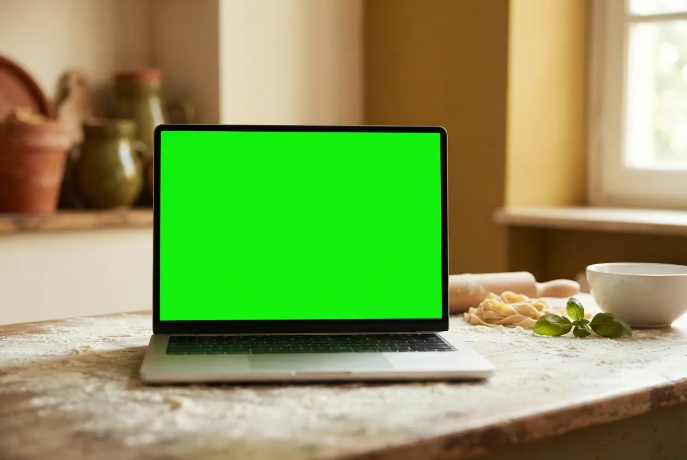
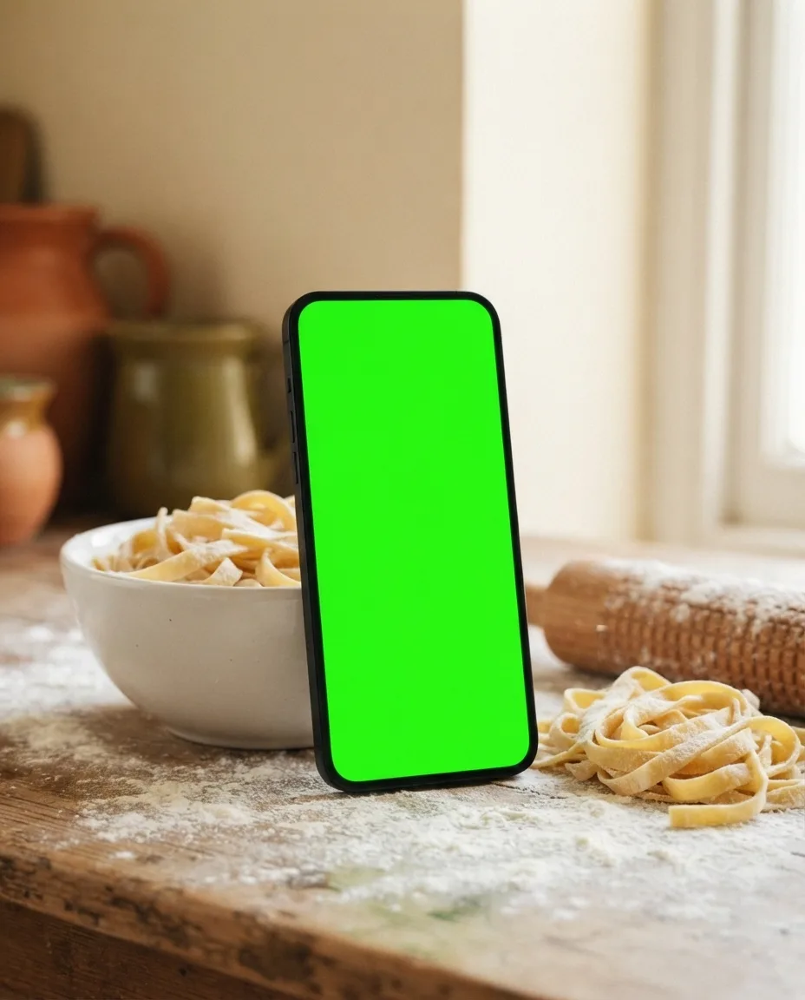
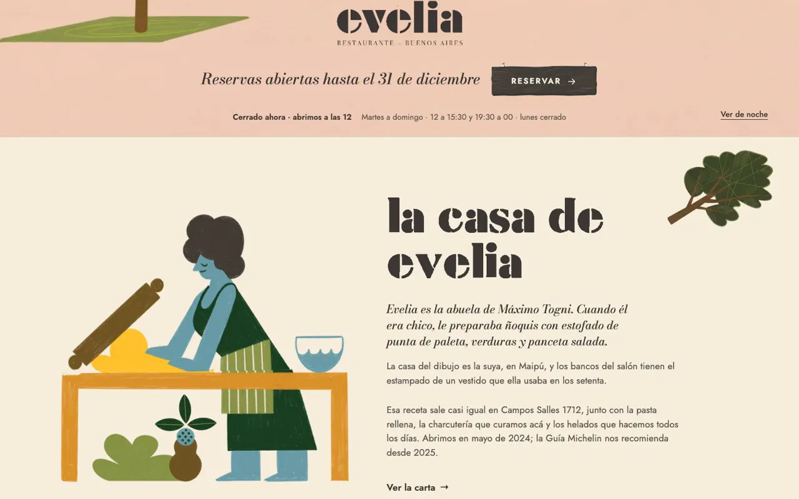
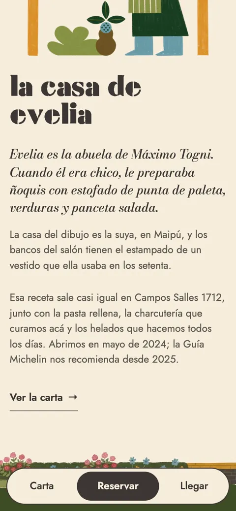
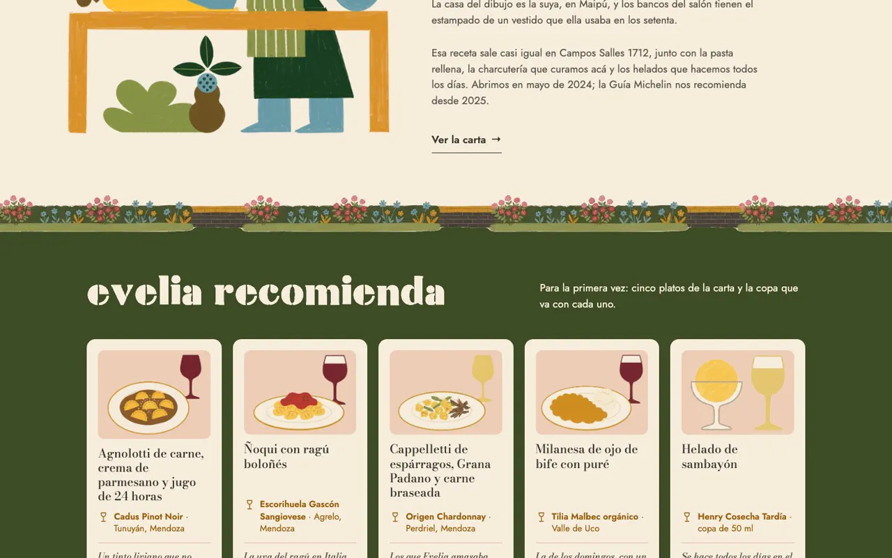
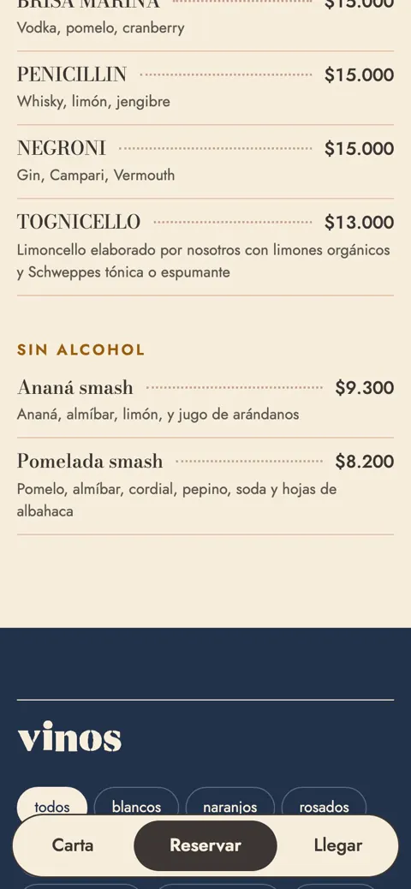
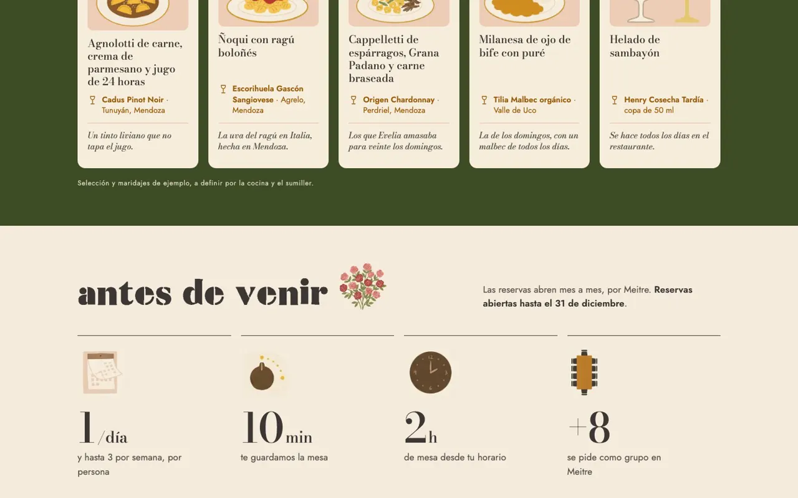

- Concepto · no encargado
- Gastronomía
- 2026
Evelia.
Su propia ilustración, animada por capas, que cambia con el turno del restaurante.
Ver el sitio

Lo que vi
Un restaurante recomendado por Michelin en 2025 y 2026, con una ilustración propia de la casa de la abuela que el sitio usaba de fondo quieto, y menú hamburguesa. Las reservas se agotan mes a mes.
La idea
«La casa de Evelia.»
El restaurante es la casa de la abuela, y la home vive al ritmo del servicio: sol al mediodía, ventanas prendidas a la noche, persianas bajas los lunes. Cuando abre la agenda del mes, cuelga un pasacalle. La carta se lee en vivo de donde ya la editan, así nadie tiene que aprender nada nuevo.
Por dentro





Cómo usé IA
| Herramienta | Para qué | Lo que corregí a mano |
|---|---|---|
| nano-banana-pro | Una placa limpia de su ilustración, por US$0,20. | Las piezas (sol, auto, la abuela) las separé por diferencia, con código. |
| Código | La noche y la casa cerrada, sobre su propio dibujo. | La casa cerrada que hizo la IA redibujaba la casa y no calzaba: la armé con la madera de su ilustración. |
| Gemini | Platos, objetos y un alfabeto, convertido en la fuente de los títulos. | Faltaban la «d» y el «4»: la d es la b espejada. |
| Claude Code | La carta en vivo desde su sistema de menú: 144 ítems. | Si el sistema falla, queda un respaldo estático. |
En números
- Estados de la casa
- 4
- Ítems de carta en vivo
- 144
- Dólares en IA de imagen
- 0,20
- MB publicados
- 2,3
Estados: mediodía, tarde, noche y cerrada, según la hora de Buenos Aires.